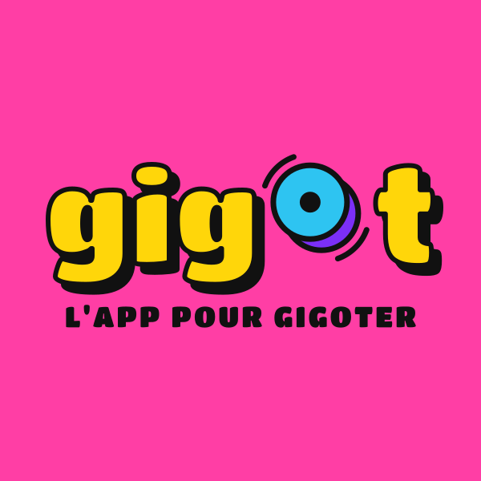
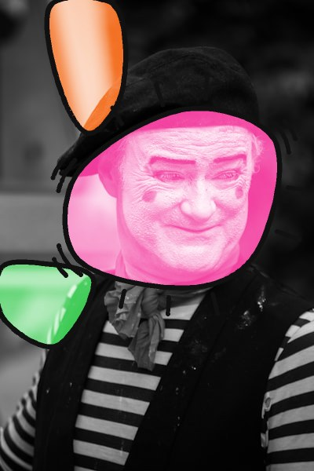
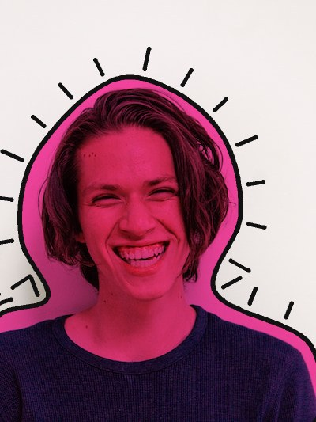
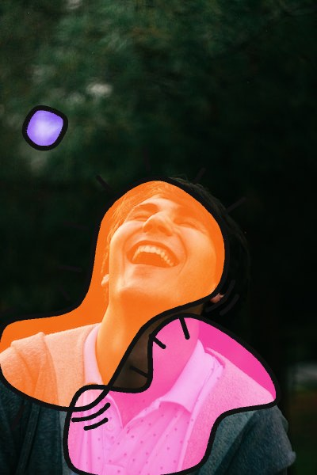

Identité visuelle de gigot.app, l'agenda culturel pour gigoter : pop art, couleurs flash cernées de noir épais, dans l'esprit de Keith Haring.
Huit couleurs. Le texte est noir sur les couleurs flash et blanc sur le violet ou le noir : ce sont les seules combinaisons qui passent le contraste WCAG AA (4,5:1).
« gig », un O en tranche de gigot vue de face, « t », et la tagline. Le fond prend une des huit couleurs ; les lettres, la face du O et son flanc en prennent trois autres, toutes différentes. L'ombre, les arcs et la tagline sont blancs sur fond noir ou violet, noirs sinon.
Le O seul : la face, son flanc décalé derrière, et deux arcs de mouvement écartés de la largeur d'un contour. Pour le favicon, l'icône d'app et le bouton.
Le pictogramme en case à cocher. Essaie : survole, clique, survole encore, reclique.
Les autres boutons (action, rond, puce de filtre, jour, lien) suivent la même règle, et servent dans la liste d'événements. Voir l'agenda et les boutons →
Les couleurs flash posées sur une photo, cernées de noir, avec des traits de vibration. Multiply sur fond clair, screen sur fond sombre : la photo reste visible dessous. En Python ou en direct dans le navigateur, où les formes évitent le curseur. Voir et essayer →



#111111, épais.| Paire | Contraste | Problème |
|---|
<style> en têteGigotButton.create({ fond, face, flanc })